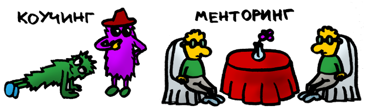

ОБУЧЕНИЕ НА РАБОТНОТО МЯСТО
Менторство и коучинг
Ако фирмата ви осъзнава важността да развива служителите си, нищо чудно да сте се замисляли за менторство и коучинг. Те са толкова успешни стратегии, защото във всяко начинание е важно истински човек да ти обърне внимание: да ти обясни някои тънкости, да те насочи върху кое да се фокусираш и кое не е толкова от значение. Ако попитате всеки успешен човек в голяма компания как се е издигнал, ще научите, че те имат способността да се поучават от чуждия опит и да накарат околните да споделят своите преживявания и съвети.
Тези методи, които ще разгледаме по- подробно, имат общо с донякъде остарялото чиракуване, което се прилага в по- технически или занаятчийски области. Например Германия, една от най- напредналите икономики, дължи достиженията си отчасти на смесица от обучения и практики в реална среда. И тук е мястото да отбележим, че нито менторството, нито коучинга са заместител на формалното обучение.
Коучът е експерт, менторът е мъдър съветник
Да отбележим, че един и същ човек може да е и ментор, и коуч, но все пак каква е разликата?
С ментора си изграждате по- лична връзка и работите върху нагласите и поведението ви, а с коуча- върху някакво конкретно умение (техники за продажба, здравословно хранене, организация на времето ви и т.н.).
Менторът може да ви дава съвети и запознанства, а коучът се води се от презумцията, че имате всички необходими ресурси, затова само насочва чрез въпроси и подсказки.
Менторът е човек, който е по- напред по пътеката, по която вървите. Те са преминали по същите стъпки, затова могат да ви кажат какви капани да избягвате, какво би им се искало да са знаели по- рано и как да постигнете целите си по- бързо. Коучът може дори да не оперира в същата индустрия, но има много способности, които са приложими в много случаи.
Менторството е по- дългосрочно, отвъд конкретната позиция, която заемате в момента, защото целта му е вашето порастване- в кариерата и в живота. Коучинг сесиите са насрочени с предварително определено времетраене. В зависимост от умението, което се развива може да се достатъчни дори две срещи.
С ментора си може да се свързвате, когато възникне въпрос или ситуация, при които мислите, че биха ви били полезни, затова има също ментори, с които контакт увате по имейл или по телефон. Разговорът с тях продължава колкото е необходимо- от 5 минути до 5 часа. Добре идея е да се срещате за обяд. Направено правилно, това може да е полезно и за двете страни- всеки има какво ни научи.
Освен мъдростта си менторът ви дава достъп до контакти и мрежи, които иначе не са налични.
Видове коучинг
Както има различни области, в които бихме желали да се подобрим, така има и съответните видове коучинг: индивидуален (или лайф коучинг),бизнес (за екипи) и екзекютив коучинг (за собственици на бизнеси, предприемачи и висши мениджъри).
Съществуват коучове, които се занимават с личностни връзки и здраве, но тук ни интересува професионалната част. Дори най- успешните директори има какво да научат, а най- добре знания се попиват в интензивни тренинги, водени от вещ специалист.
Някои съвети, ако пишете на потенциален ментор
И така, набелязали сте си страхотен професионалист. Време е да го направите ваш ментор!
Да се залавяме за клавиатурите. Ето няколко съображения, които да вземете предвид, когато пишете молба за менторство.
Първо, обяснете ясно с какво се занимавате и посочете защо пишете точно на този човек- заради опита им в определена област, заради интервю, взето от тях, което сте прочели или някаква тяхна работа, от която се възхищавате. Добро начало е да обясните какво общо имате, с човека, на когото пишете. Така още от първото изречение с отсрещната страна имате нещо, което ви сплотява, а и, ако те имат разнообразни интереси, им става ясно за какво точно става дума.
Изкусително е да поискате да ви споделят всичкия си опит, но трудно се предава в няколко параграфа наученото за години, така че задайте конкретен въпрос. Добра идея е да ги питате за процеса им, ако не се сещате за друго. Но помислете! Има ли някой аспект от работата, който ви затруднява или ви удивлява какво и как са постигнали? Има ли някой въпрос, който ви мъчи?
Уважавайте времето на желания ви ментор и не пишете дълги мейли. Разговор може би е по- добра идея. Още имайте предвид, че са заети така че не ги карайте да пътуват дълго, за да се срещнат с вас и не определяйте обаждане в неподходящ час.
Осъществили сте контакт със заветния ментор. Поздравления! Но след като ви отговорят, не ги забравяйте. Пратете новости- какво е станало, обяснете как наученото от тях ви е помогнало, както и не забравяйте да пратите благодарности. Ако пишете на този човек, защото има нещо, с което ви вдъхновява, най- вероятно това изисква доста време, така че оценете отделеното за вас.